Five tracks
Four pitched tracks and a drum track with independent pattern lengths, pan, level and mute. Edit four notes per pitched step or work with 16 independent drum lanes. Set velocity, gate, hit probability and timing offset.
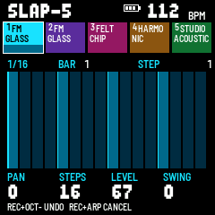
Four pitched tracks and a drum track with independent pattern lengths, pan, level and mute. Edit four notes per pitched step or work with 16 independent drum lanes. Set velocity, gate, hit probability and timing offset.
Browse 136 factory patches, including eight new saw programs. The original 128 patch IDs are preserved. Play the FM, analog, modeled strings, keys, formants, bell and texture engines.
Shape each track with filter, slicer, inserts, reverb, tempo delay, chorus and drive.
Follow each track in DNA Helix, Ferrofluid, Gravity Rings, Solar System, Digital VU, Slap Reactor and the Dancer.
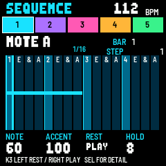
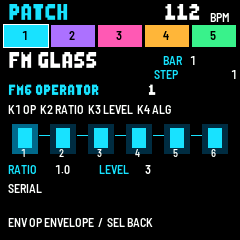
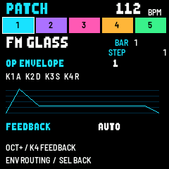
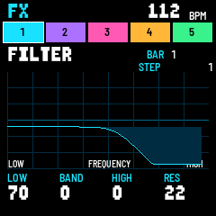
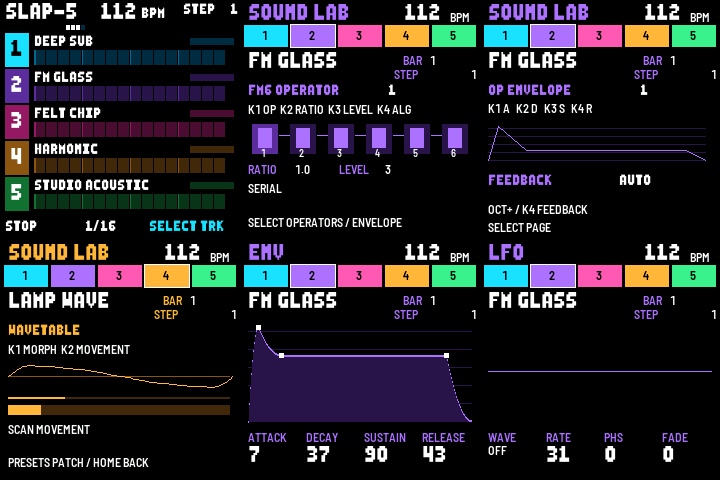
SLAP STUDIO opens in Song Mode. Add or duplicate a scene, then select a track clip to edit it. Choose scene bars and repeats before playing the song. During playback, click a scene to queue it. Quick REC captures the active scene’s selected clip, and drum generation applies to the current scene. Add per-bar level and pan automation for each track. Export a song for all five tracks and every scene, or export the selected scene as a standalone Studio project.
The primary browser installer offers 0.1.18. See the experimental installer for the current hardware-testing release.
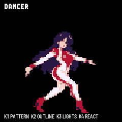
Primary browser installer · 0.1.18
Experimental FM-1 hardware testing · v0.1.30 · SLAP Nexus Studio and manual
Experimental FM-1 hardware testing · v0.1.31 · SLAP Nexus Studio and manual
SLAP-5 source · Browser test resultsFM-1 hardware-testing candidate. Main public promotion requires the five-track JUNGLE audio test on the FM-1.
Install v0.1.48 experimental · Release notes, checksums and engineering backup · Previous experimental installer
Five sequencer tracks with 16 shared voices, 256-frame audio blocks, USB audio/MIDI and a 240×240 display. FM6 operator coefficients are cached when the timbre changes. Live track FX runs on Core 0 while Core 1 handles eligible voice jobs.
Tap EDIT for Sound Lab, or hold EDIT for two seconds for MIXER. MIXER K1 sets level, K2 ducking, K3 all-track filter and K4 selected-track filter. SETTINGS offers four knob styles and separate LOW/MED/MAX brightness for track selection and other buttons.
Keep an untouched project copy for rollback. Custom Expression projects use schema 13 and require v0.1.41 or later.
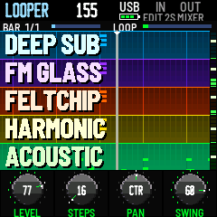
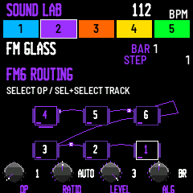
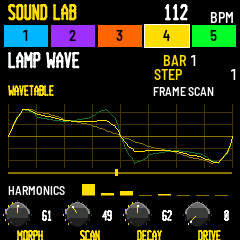
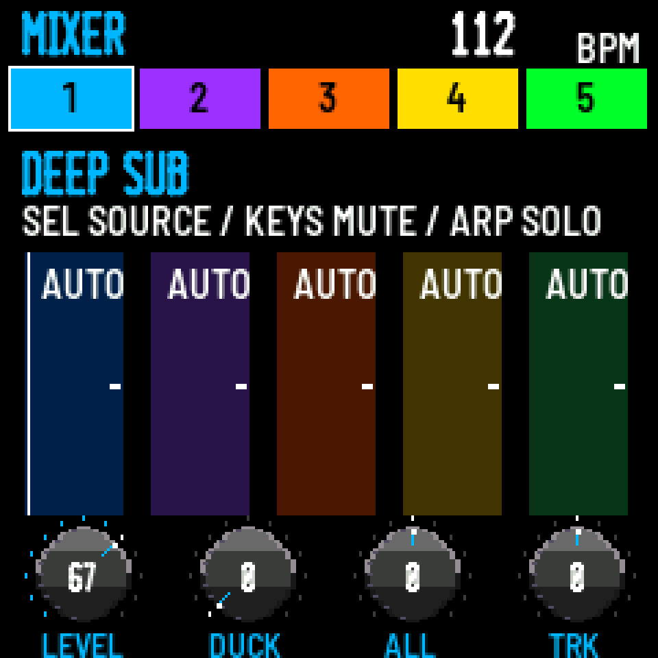
Native-resolution captures from the firmware’s host renderer.
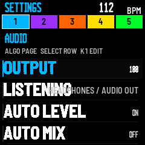
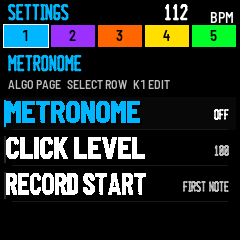
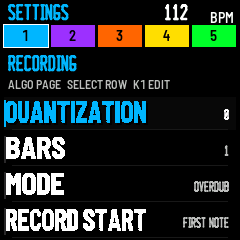
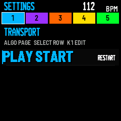
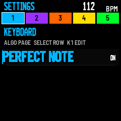
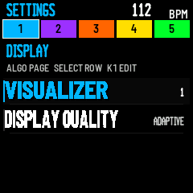
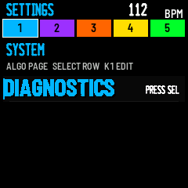
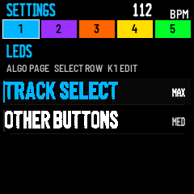
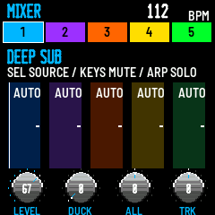
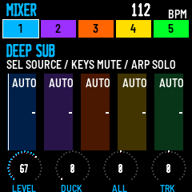
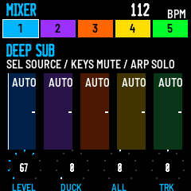
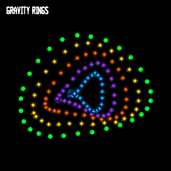
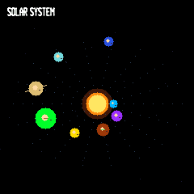
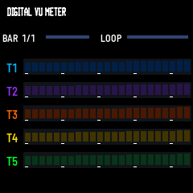
Experimental FM-1 build. Physical qualification is pending.
Direct browser installer · Release notes and actual firmware screenshots · Matching Studio
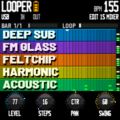
Experimental FM-1 build. Physical qualification is pending.
Direct browser installer · Redesigned knobs and actual firmware screenshots · Matching Studio
Experimental FM-1 build. Physical qualification is pending.
Direct browser installer · Redesigned knobs and actual firmware screenshots · Matching Studio
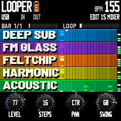
Experimental FM-1 build. Physical qualification is pending.
Direct browser installer · Redesigned knobs and actual firmware screenshots · Matching Studio

Experimental FM-1 build. Physical qualification is pending.
Direct browser installer · Redesigned knobs and actual firmware screenshots · Matching Studio

Experimental FM-1 build. Physical qualification is pending.
Direct browser installer · Redesigned knobs and actual firmware screenshots · Matching Studio
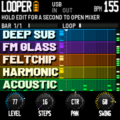
Experimental FM-1 build. Physical qualification is pending.
Direct browser installer · Redesigned knobs and actual firmware screenshots · Matching Studio
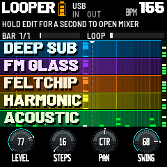